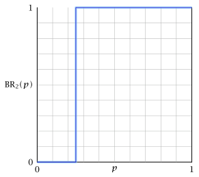

| $\mathsf{A}$ | $\mathsf{R}$ | |||
| $\mathsf{A}$ | $-2$ | $-2$ | $0$ | $-3$ |
| $\mathsf{R}$ | $-3$ | $0$ | $-1$ | $-1$ |
5 Nash equilibrium
So far we have looked at two solution concepts:
Rationalizable strategies, which don’t exist for all games
Optimal or minmax strategies for zero-sum games.
In this section, we look at the most popular solution concept known as Nash equilibrium (which we will abbreviate to NE).
5.1 What is Nash equilibrium
Informal definition of Nash equilibrium
A strategy profile is a NE if no player can improve its performance by unilateral deviations.
The above definition can be written formally as follows.
Definition 5.1 A Nash equilibrium in pure strategies for a strategic game \(\mathscr{G} = \langle N, (\ALPHABET S_i)_{i \in N}, (u_i)_{i \in N} \rangle\) is a strategy profile \(s^* = (s^*_1, \dots, s^*_n) \in \ALPHABET S\) such that for each \(i \in N\) the following is satisfied: \[ u_i(s_i^*, s_{-i}^*) \ge u_i(s_i, s_{-i}^*), \quad \forall s_i \in \ALPHABET S_i. \] The payoff vector \(u(s^*)\) is called the equilibrium payoff corresponding to NE \(s^*\).
Another way to define NE is use Best response correspondece \(\BR_i \colon \ALPHABET S_{-i} \rightrightarrows A_i\) defined as follows \[ \BR_i(s_{-i}) = \bigl\{ s_i \in \ALPHABET S_i : u_i(s_i, s_{-i}) \ge u_i(τ_i, s_{-i}), \forall τ_i \in \ALPHABET S_i \bigr\}. \]
Definition 5.2 A strategy profile \(s^* \in \ALPHABET S\) is a Nash equilibrium if each player is playing a best response to the strategy profile of other players, i.e., \[ s_i^* \in \BR_i(s^*_{-i}), \quad \forall i \in N. \]
5.2 Relationship with previous solution concepts
5.2.1 Relationship between NE and dominant strategy equilibrium
Consider prisoner’s dilemma game.
Recall that \((\mathsf{A}, \mathsf{A})\) was the equilibrium in strongly dominant strategies. It can be easily verified that is also a Nash equillbrium. In fact, we have the following general result:
Proposition 5.1 Any equilibrium in strongly or weakly dominant strategy is also a Nash equilibrium.
Proof
Suppose \(s^* \in \ALPHABET S\) is an equilibrium in strongly or weakly dominant strategies. Then, by definition, for all players \(i \in N\), we have \[ u_i(s_i^*, s_{-i}) \ge u_i(s_i, s_{-i}), \quad \forall s_i \in \ALPHABET S_i, s_{-i} \in \ALPHABET S_{-i}. \] In particular, setting \(s_{-i} = s_{-i}^*\) gives \[ u_i(s_i^*, s_{-i}^*) \ge u_i(s_i, s_{-i}^*), \quad \forall s_i \in \ALPHABET S_i. \] Thus, \(s^*\) is a Nash equilibrium.
5.2.2 Relationship between NE and rationalizable strategies
Recall the following example discussed earlier:
| $\mathsf{L}$ | $\mathsf{C}$ | $\mathsf{R}$ | ||||
| $\mathsf{T}$ | $1$ | $0$ | $1$ | $2$ | $0$ | $1$ |
| $\mathsf{B}$ | $0$ | $3$ | $0$ | $1$ | $2$ | $0$ |
We had shown earlier that \((\mathsf{T}, \mathsf{C})\) is a rationalizble strategy obtained by IEDS. It can be easily verified that it is also a Nash equilibrium. In fact, we have the following general result.
Proposition 5.2 Any rationalizable output come IEDS or IEWDS is a Nash equilibrium.
Proof Sketch
For IEDS, the proof hinges on the fact that at each step of IEDS, we remove strategies that are dominated and therefore cannot be part of the best response.
For IEWDS, we may remove some best response strategies, but anything that survives has to be a best response pair.
5.2.3 Relationship between NE and optimal strategies in zero sum games
Recall the following example discussed earlier in Example 2.2
| $\mathsf{L}$ | $\mathsf{C}$ | $\mathsf{R}$ | |
| $\mathsf{T}$ | $2$ | $-1$ | $-2$ |
| $\mathsf{M}$ | $1$ | $0$ | $1$ |
| $\mathsf{B}$ | $-2$ | $-1$ | $2$ |
We had shown that \((\mathsf{M}, \mathsf{C})\) is an optimal strategy of this game. It can be easily verified that it is also a Nash equilibrium. In fact, we have the following general result:
Proposition 5.3 Any optimal strategy of a ZSG is a NE and vice versa.
Proof
This follows immediately from the saddle point property of optimal strategies.
The above discussion shows that the concept of Nash equilibrium generalizes all the solution concepts that we have discussed so far. The main advantage of Nash equilibrium is that it exists even when the previously discussed solution concepts do not. For instance, consider the following games.
Example 5.1 Find all NE (in pure strategies) for Battle of Sexes game.
| $\mathsf{F}$ | $\mathsf{O}$ | |||
| $\mathsf{F}$ | $2$ | $1$ | $0$ | $0$ |
| $\mathsf{O}$ | $0$ | $0$ | $1$ | $2$ |
Example 5.2 Find all NE (in pure strategies) for the game of chicken
| $\mathsf{C}$ | $\mathsf{H}$ | |||
| $\mathsf{C}$ | $3$ | $3$ | $1$ | $10$ |
| $\mathsf{H}$ | $10$ | $1$ | $0$ | $0$ |
Note that a game may not have an equilibrium in pure strategyes. For example, the game of matching pennies has no equilibrium in pure strategies.
| $\mathsf{H}$ | $\mathsf{T}$ | |||
| $\mathsf{H}$ | $1$ | $-1$ | $-1$ | $1$ |
| $\mathsf{T}$ | $-1$ | $1$ | $1$ | $-1$ |
It is natural to ask if we can seek a NE in mixed strategies in such instances. And, in general, when does a game have a NE?
This question was answered by (Nash 1950; Nash 1951) who showed that any finte game has a NE in mixed strategy. We will come to that proof later.
5.3 Computing NE in \(2 × 2\) games
We start by a brute-force method to compute NE in \(2 × 2\) games. This method is just for illustration. Based on the intuition from this method, we will later present an efficient method to compute NE.
Consider the game shown below. We can check that the game has no NE in pure strategies.
| $\mathsf{L}$ | $\mathsf{R}$ | |||
| $\mathsf{T}$ | $1$ | $-1$ | $0$ | $2$ |
| $\mathsf{B}$ | $0$ | $1$ | $2$ | $0$ |
Let \(σ_1 = (p, 1-p)\) and \(σ_2 = (q, 1-q)\) be a NE in mixed strategies. Then, the probability distribution of the different actions is shown below:
| $\mathsf{L}$ | $\mathsf{R}$ | |
| $\mathsf{T}$ | $pq$ | $p\left( 1 - q \right)$ |
| $\mathsf{B}$ | $\left( 1 - p \right) \cdot q$ | $\mathrm{1 - p}\left( 1 - q \right)$ |
Thus, we have \[\begin{align*} U_1(p, q) \coloneqq U_1(σ_1, σ_2) &= 1 ⋅ pq + 0 ⋅ p (1-q) + 0 ⋅ (1-p) q + 2 ⋅ (1-p)(1-q) \\ &= 3pq - 2p -2q + 2, \end{align*}\] and \[\begin{align*} U_2(p, q) \coloneqq U_2(σ_1, σ_2) &= -1 ⋅ pq + 2 ⋅ p (1-q) + 1 ⋅ (1-p) q + 0 ⋅ (1-p)(1-q) \\ &= -4pq + 2p + q . \end{align*}\]
Thus, we can think of this as a two player game on the unit square where \(P_1\) chooses \(p \in [0,1]\) and \(P_2\) chooses \(q \in [0,1]\) and the pageoff functions are \(U_1(p, q)\) and \(U_2(p,q)\), respectively.
In this notation, NE is a point \((p,q)\) such that \[ p \in \BR_1(q) \quad\text{and}\quad q \in \BR_2(p). \]
We will now identify the best response maps \(\BR_1\) and \(\BR_2\) and then compute the NE.
5.3.1 Best response map of player 1
Recall that \[ U_1(p,q) = 3 pq - 2p - 2q + 2 = (3q - 2) p - 2q + 2 \] which is linear in \(p\) (for a fixed \(q\)). Thus, \[ \max_{p \in [0,1]} U_1(p,q) = \begin{cases} U_1(1, q) = q, & \hbox{if } 3q - 2 \ge 0 \\ U_1(0, q) = -2q + 2, & \hbox{if } 3q - 2 < 0 \end{cases} \] and \[ \arg\max_{p \in [0,1]} U_1(p,q) = \begin{cases} 1, & \hbox{if } 3q - 2 > 0 \\ [0,1], & \hbox{ if } 3q - 2 = 0 \\ 0, & \hbox{if } 3q - 2 < 0 \end{cases} \]
We can visual these results graphically, as shown in Figure 5.1.
5.3.2 Best response map of player 2
We repeat the above process for player 2. Recall that \[ U_2(p,q) = -4 pq + 2p + q = (1 - 4p)q + 2p \] which is linear in \(q\) (for a fixed \(p\)). Thus, \[ \max_{q \in [0,1]} U_2(p,q) = \begin{cases} U_2(p, 0) = 2p, & \hbox{if } 1 - 4p \le 0 \\ U_2(p, 1) = -2p + 1, & \hbox{if } 1 - 4p > 0 \end{cases} \] and \[ \arg\max_{q \in [0,1]} U_2(p,q) = \begin{cases} 0, & \hbox{if } 1 - 4p < 0 \\ [0,1], & \hbox{ if } 1 - 4p = 0 \\ 1, & \hbox{if } 1 - 4p > 0 \end{cases} \]
We can visual these results graphically, as shown in Figure 5.2.

5.3.3 Identifying the NE
To compute the NE, we look at the two BR curves and find their point of intersection, as shown in Figure 5.3.
Thus, the mixed strategy NE is \[σ_1 = (\tfrac 14, \tfrac 34) \quad\text{and}\quad σ_2 = (\tfrac 23, \tfrac 13).\] Since the curves have no other intersection, the game has a unique Nash equilibrium.
Notice that each BR curve have a “staircase” appearance. If we are looking for an equilibrium in strictly mixed strategies (i.e., \(p \in (0,1)\) and \(q \in (0,1)\)), then the intersection point of the two BR curves will be the vertically straight line part of the BR curves.
Recall that we have argued that \[ \max_{p \in [0,1]} U_1(p,q) = \begin{cases} U_1(\mathsf{T}, q), & q \ge q^* \\ U_1(\mathsf{B}, q), & q \le q^* \end{cases} \] where \(q^*\) is the point where \(U_1(\mathsf{T}, q) = U_1(\mathsf{B}, q)\).
By a symmetric argument, we have that \(p^*\) point in the BR curve for player 2 is the point where \(U_2(p, \mathsf{L}) = U_2(p, \mathsf{R})\).
Thus, instead of drawing the BR curves, we could have directly found the mixed strategy NE \((p^*, q^*)\) as \[ \bbox[5pt,border: 1px solid]{ \begin{aligned} q^* &: q \hbox{ such that } U_1(\mathsf{T}, q) = U_1(\mathsf{B}, q) \\ p^* &: p \hbox{ such that } U_2(p, \mathsf{R}) = U_2(p, \mathsf{B}) \end{aligned} } \] This provides a general method of finding the NE for \(2 × 2\) games, which we use in general.
Example 5.3 Find all the NE of battle of sexes game.
| $\mathsf{F}$ | $\mathsf{O}$ | |||
| $\mathsf{F}$ | $2$ | $1$ | $0$ | $0$ |
| $\mathsf{O}$ | $0$ | $0$ | $1$ | $2$ |
Solution
We have already identified the pure strategy NE in Example 5.1. We now consider NE in strictly mixed strategies.
Let \(σ_1 = (p, 1-p)\) and \(σ_2 = (q, 1-q)\) be a NE in mixed strategies. Then, the equilibrium value of \(p\) is such that \[ U_2(p, \mathsf{F}) = U_2(p, \mathsf{O}) \] Hence, \[ p = 2 (1 - p) \implies p = \tfrac 23. \]
Similarly, the equilibrium value of \(q\) is such that \[ U_1(\mathsf{F}, q) = U_1(\mathsf{O}, q) \] Hence, \[ 2 q = 1 - q \implies q = \tfrac 13.\] Thus, in addition to the two pure strategy NE, we have \(σ_1 = (\tfrac 23, \tfrac 13)\) and \(σ_2 = (\tfrac 13, \tfrac 23)\) is a mixed strategy NE.
5.4 The indifference principle
We now present a general method to compute NE for finite games. The method relies on the following characterization of NE.
Theorem 5.1 Let \(\mathscr{G} = \langle N, (\ALPHABET S_i)_{i \in N}, (u_i)_{i \in N} \rangle\) be a finite strategic game. Then \(σ^* = (σ^*_1, \dots, σ^*_n)\), where \(σ^*_i \in Δ(\ALPHABET S_i)\), \(i \in N\)< is a mixed strategy NE of \(\mathscr{G}\) if and only if for every player \(i \in N\) and every pure strategy \(s_i\) in the support of \(σ^*_i\) (i.e., every \(s_i\) such that \(σ^*_i(s_i) > 0\)), we have \[ s_i \in \BR_i(σ^*_{-i}). \]
Proof
\((\implies)\) Suppose there is a \(s_i\) in the support of \(σ^*_i\) (i.e., \(σ^*_i(s_i) > 0\)) but \(s_i \not\in \BR_{i}(σ^*_{-i})\). Then, by linearity of \(U_i(σ_i, σ^*_{-i})\) in \(σ_i\), player \(i\) can increase its payoff by transferring the probability mass on \(s_i\) to an action that is a BR. This will imply that \(σ^*_i\) is not a Br, which is a contradiction. Thus, our initial supposition must be incorrect and \(s_i \in \BR_i(σ^*_{-i})\).
\((\impliedby)\) Suppose for every player \(i \in N\) and every action \(s_i\) in the support of \(σ^*_i\) is a BR of \(σ^*_{-i}\) but \(σ^*\) is not a NE. Then, there must be a player \(i\) such that \(σ^*_i\) is not a BR to \(σ^*_{-i}\).
Since \(σ^*_i\) is not a BR, there must be a mixed strategy \(τ_i\) such that \[\begin{equation}\label{eq:ineq} U_i(σ^*_i, σ^*_{-i}) < U_i(τ_i, σ^*_{-i}). \end{equation}\] Now consider a \(t_i\) in the support of \(τ_i\) and \(s_i\) in the support of \(σ^*_i\). By linearity of \(U_i\), we have \[ U_i(t_i, σ^*_{-i}) = U_i(τ_i, σ^*_{-i}) \] and \[ U_i(s_i, σ^*_{-i}) = U_i(σ^*_i, σ^*_{-i}). \] Eq. \(\eqref{eq:ineq}\) implies that \(U_i(t_i, σ^*_{-i}) > U_i(s_i, σ^*_{-i})\). This means that \(s_i\) is not a BR of \(σ^*_{-i}\), which is a contraction. Hence, our supposition that \(σ^*_i\) is not a NE must be incorrect.
An immediate consequence of the previous result is the following.
Theorem 5.2 (The indifference principle) Let \(σ^* = (σ^*_1, \dots, σ^*_n)\) be a NE in mixed strategy. Then, we have the following:
For any \(s_i\) such that \(σ^*_i(s_i) > 0\), we have \[ U_i(s_i, σ^*_{-i}) = U_i(σ^*_i, σ^*_{-i}). \]
For any \(s_i\) such that \(σ^*_i(s_i) = 0\), we have \[ U_i(s_i, σ^*_{-i}) \le U_i(σ^*_i, σ^*_{-i}). \]
Proof
From Theorem 5.1, we know that every pure strategy in the support of \(σ^*_i\) must be a BR to \(σ^*_{-i}\) and hence all such strategies must have the same payoff. Moreover, if all the pure strategies in the support of \(σ^*_i\) have the same payoff, their payoff must be the same as the payoff of \(σ^*_i\). This establishes the first property.
The second property follows from the definition of NE.
Theorem 5.2 can be used to compute the NE of general two-player finite game. Let \((σ^*_1, σ^*_2)\) be a mixed strategy NE. Let \[ \text{supp}(σ^*_i) = \{ s_i \in \ALPHABET S_i : σ^*_i(s_i) > 0 \} \] denote the support of \(σ^*_i\). From Theorem 5.2, we have that for any \(s^∘_i \in \text{supp}(σ^*_i)\), \(i \in \{1, 2\}\), we must have \[\begin{align*} U_1(s^∘_1, σ^*_2) &= U_1(s_1, σ^*_2), & s_1 &\in \text{supp}(σ^*_1) \\ U_1(s^∘_1, σ^*_2) &\ge U_1(t_1, σ^*_2), & t_1 &\not\in \text{supp}(σ^*_1) \end{align*}\] and \[\begin{align*} U_2(σ^*_1, s^∘_2) &= U_2(σ^*_1, s_2), & s_2 &\in \text{supp}(σ^*_2) \\ U_2(σ^*_1, s^∘_2) &\ge U_2(σ^*_1, t_2), & t_2 &\not\in \text{supp}(σ^*_2) \end{align*}\]
Note that for any given choice of \(\text{supp}(σ^*_1)\) and \(\text{supp}(σ^*_2)\), we can check if the above equations have a consistent solution. If they do, that solutin is a NE.
The difficulty is that we do not know the support of \(σ^*_1\) and \(σ^*_2\). So, we need to repeat the above process for each choice of supports. Computing NE by such a brute-force search has an exponential complexity in \(\ABS{\ALPHABET S_1}\) and \(\ABS{\ALPHABET S_2}\).
Example 5.4 Compute all NE of the following game.
| $\mathsf{L}$ | $\mathsf{C}$ | $\mathsf{R}$ | ||||
| $\mathsf{T}$ | $7$ | $2$ | $2$ | $7$ | $3$ | $6$ |
| $\mathsf{B}$ | $2$ | $7$ | $7$ | $2$ | $4$ | $5$ |
Solution
We first check for pure strategy NE by inspection and see that the game has no pure strategy NE.
To search for mixed strategy NE, we will consider all possible choices for the support for mixed strategyes for both players. Player 1 has two pure strategies and any mixed strategy must randomize between them. For player 2, there are three pure strategies, so there are \(\binom{3}{2} + \binom{3}{3} = 4\) possible choices for the support of mixed strategies. We must search for NE in each of these cases.
For all possibilities, we will assume that \[ σ^*_1 = (p[\mathsf{T}], 1-p[\mathsf{B}]) \quad\text{and}\quad σ^*_2 = (q_1[\mathsf{L}], q_2[\mathsf{C}], q_3[\mathsf{R}]) \] where \(q_1, q_2, q_3 \ge 0\) and \(q_1 + q_2 + q_3 = 1\). Thus, \[\begin{align*} U_1(\mathsf{T}, σ^*_2) &= 7q_1 + 2 q_2 + 3 q_3 \\ U_1(\mathsf{B}, σ^*_2) &= 2q_1 + 7 q_2 + 4 q_3 \end{align*}\] and \[\begin{align*} U_2(σ^*_1, \mathsf{L}) &= 2 p + 7(1-p) = -5p + 7 \\ U_2(σ^*_1, \mathsf{C}) &= 7p + 2(1-p) = 5p + 2 \\ U_2(σ^*_1, \mathsf{R}) &= 6p + 5(1-p) = p + 5 \end{align*}\]
Case 1: Assume that \(\text{supp}(σ^*_2) = \{\mathsf{L}, \mathsf{C}, \mathsf{R}\}\) so \(q_1, q_2, q_3 > 0\). By the irrelevance principle, we must have \[ U_1(\mathsf{T}, σ^*_2) = U_1(\mathsf{B}, σ^*_2) \] and \[ U_2(σ^*_1, \mathsf{L}) = U_2(σ^*_1, \mathsf{C}) = U_2(σ^*_1, \mathsf{R}). \] The second set of equations has no consistent solution for \(p\). Thus, there is no NE in this case.
Case 2: Assume that \(\text{supp}(σ^*_2) = \{\mathsf{L}, \mathsf{C}\}\), i.e., \(q_1, q_2 > 0\) and \(q_3 = 0\). By the irrelevance principle, we must have \[ U_1(\mathsf{T}, σ^*_2) = U_1(\mathsf{B}, σ^*_2) \] and \[ U_2(σ^*_1, \mathsf{L}) = U_2(σ^*_1, \mathsf{C}) \ge U_2(σ^*_1, \mathsf{R}). \] Solving \(U_2(σ^*_1, \mathsf{L}) = U_2(σ^*_1, \mathsf{C})\), we get \(p = \tfrac 12\) and \(U_2(σ^*_1, \mathsf{L}) = U_2(σ^*_1, \mathsf{C}) = 4.5\).
We now check \(U_2(σ^*_1, \mathsf{R}) = p + 5 = 5.5 > 4.5\). Thus, the second system of equations has no consistent solution for \(p\). Thus, there is no NE in this case.
Case 3: Assume that \(\text{supp}(σ^*_2) = \{\mathsf{L}, \mathsf{R}\}\), i.e., \(q_1, q_3 > 0\) and \(q_2 = 0\). By the irrelevance principle, we must have \[ U_1(\mathsf{T}, σ^*_2) = U_1(\mathsf{B}, σ^*_2) \] and \[ U_2(σ^*_1, \mathsf{L}) = U_2(σ^*_1, \mathsf{R}) \ge U_2(σ^*_1, \mathsf{C}). \] Solving \(U_2(σ^*_1, \mathsf{L}) = U_2(σ^*_1, \mathsf{R})\), we get \(p = \tfrac 13\) and \(U_2(σ^*_1, \mathsf{L}) = U_2(σ^*_1, \mathsf{C}) = \tfrac{16}{3}\).
We now check \(U_2(σ^*_1, \mathsf{C}) = 5p + 2 = \tfrac{11}{3} \le \tfrac{16}{3}\). Thus, the second system of equations has a consistent solution for \(p\), \(p = \tfrac{1}{3}\).
So, we check the first system of equations \(U_1(\mathsf{T}, σ^*_2) = U_1(\mathsf{B}, σ^*_2)\) (for \(q_2 = 0\)), which gives \(q_1 = \tfrac{1}{6}\) and \(q_3 = \tfrac{5}{6}\) and the corresponding payoff is \(U_1(\mathsf{T}, σ^*_2) = U_1(\mathsf{B}, σ^*_2) = \tfrac{11}{3}\).
Thus, \(σ^*_1 = (\tfrac 13, \tfrac 23)\) and \(σ^*_2 = (\tfrac 16, 0, \tfrac 56)\) is a NE with payoff \((\tfrac{11}{3}, \tfrac{16}{3})\).
Case 4: Assume that \(\text{supp}(σ^*_2) = \{\mathsf{C}, \mathsf{R}\}\), i.e., \(q_2, q_3 > 0\) and \(q_1 = 0\). By the irrelevance principle, we must have \[ U_1(\mathsf{T}, σ^*_2) = U_1(\mathsf{B}, σ^*_2) \] and \[ U_2(σ^*_1, \mathsf{C}) = U_2(σ^*_1, \mathsf{R}) \ge U_2(σ^*_1, \mathsf{L}). \] Solving \(U_2(σ^*_1, \mathsf{C}) = U_2(σ^*_1, \mathsf{R})\), we get \(p = \tfrac 34\) and \(U_2(σ^*_1, \mathsf{C}) = U_2(σ^*_1, \mathsf{R}) = \tfrac{23}{4}\).
We now check \(U_2(σ^*_1, \mathsf{L}) = -5p + 7 = \tfrac{13}{4} \le \tfrac{23}{4}\). Thus, the second system of equations has a consistent solution for \(p\), \(p = \tfrac{3}{4}\).
So, we check the first system of equations \(U_1(\mathsf{T}, σ^*_2) = U_1(\mathsf{B}, σ^*_2)\) (for \(q_1 = 0\)), which gives \(q_2 = -\tfrac{1}{4}\) and \(q_3 = \tfrac{5}{4}\), which is not a valid probability mass function. Thus, the first system of equations does not have a consistent solution.
Therefore, the game has a unique NE that is identified in Case 3.
5.5 Proof of the existence of Nash equilibrium
We now present a proof that every finite game has a NE in mixed strategies. The proof is based on Nash (1950) and relies on :Kakutani’s fixed point theorem, which we state below.
Theorem 5.3 (Kakutani’s fixed point theorem) Let \(\ALPHABET X\) be a compact and convex subset of \(\reals^n\) and \(f \colon \ALPHABET X \rightrightarrows \ALPHABET X\) be a set valued correspondence which satisfies:
for all \(x \in \ALPHABET X\), the set \(f(x)\) is non-empty and convex.
The graph of \(f(x)\) is closed, which means that if we consider two converging sequences \(\{x_n\}_{n \ge 1}\) and \(\{y_n\}_{n \ge 1}\) such that \(x_n \to x^*\) and \(y_n \to y^*\) such that \(y_n \in f(x_n)\) for all \(n\), then \(y^* \in f(x^*)\).
Then \(f\) has a fixed point \(x^*\), i.e., there exists an \(x^* \in \ALPHABET X\) such that \(x^* \in f(x^*)\).
To use this theorem, we need the notion of quasi-concave function, which can be defined in two equivalent ways.
Super-level set definition Let \(\ALPHABET C\) be a convex subset of \(\reals^n\). A function \(g \colon \ALPHABET C \to \reals\) is said to be quasi-concave if for every \(α \in \reals\), the super-level set \[ \ALPHABET S^{α} \coloneqq \{ x \in \ALPHABET C : g(x) \ge α \} \] is convex.
Interpolation definition For the same setup as above, the function \(g \colon \ALPHABET C \to \reals\) is said to be quasi-concave if for every \(x, y \in \ALPHABET C\) and \(λ \in [0, 1]\) \[ f(λ x + (1-λ)y) \ge \min\{ f(x), f(y) \}. \] Thus, if we draw a line between two points in \(\ALPHABET C\), then the the value of the function is along this line is never less than the smaller of the two end point values.
Quasi-concavity is a milder assumption that concavity. In particular, a concave function is quasi-concave but the reverse in not true. For example, consider the density of a Gassian random variable: \[ g(x) = e^{-\NORM{x}^2} \] which is quasi-concave but not concave.
Quasi-concave functions are useful in optimization because for a quasi-concave function, a local minimum is also a global minimum.
Now we state a theorem which guarantees the existence of Nash equilibrium in pure strategies.
Theorem 5.4 A strategic game \(\mathscr{G} = \langle N, (\ALPHABET S_i)_{i \in N}, (u_i)_{i \in N} \rangle\) has a NE in pure strategies if for all \(i \in N\):
\(\ALPHABET S_i\) is non-empty, compact, and a convex subset of a Eucledian space.
The utlitiy function \(u_i \colon \ALPHABET S \to \reals\) is continuous in \(\ALPHABET S\) and quasi-concave in \(\ALPHABET S_i\).
Proof
Consider the set valued map \(\BR \colon \ALPHABET S \rightrightarrows \ALPHABET S\) define by \[ \BR(s) = \MATRIX{ \BR_1(s_{-1} \\ \vdots \\ \BR_n(s_{-n}) }. \] We verify that \(\BR(s)\) satisfies the conditions of Kakutani’s fixed point theorem (Theorem 5.3).
For any \(i \in N\) and \(s_{-i} \in \ALPHABET S_{-i}\), the set \(\BR_i(s_{-i})\) is non-empty because \(u_i\) is continuous and \(\ALPHABET S_i\) is compact.
\(\BR_i(s_{-i})\) is convex because \(u_i\) is quasi-concave in \(\ALPHABET S_i\)
\(\BR(s)\) has a closed graph because each \(B_i(s_{-i})\) is close because \(u_i\) is continuous.
Thus, by Kakutani’s fixed point theorem, \(\BR(s)\) has a fixed point \(s^*\) such that \(s^* = \BR(s^*)\). By definition, such a \(s^*\) is a NE.
Theorem 5.5 (Nash) Every finite strategic game has a NE in mixed strategies.
Proof
For any game \(\mathscr{G}\), consider the mixed extension \(\mathscr{G}'\). If \(\mathscr{G}\) is finite, then
\(Δ(\ALPHABET S_i)\) is non-empty, compact and convex subset of a Eucledian space.
\(U_i\) is continuous on \(Δ(\ALPHABET S_1) × \cdots × Δ(\ALPHABET S_n)\) and linear (and therefore also quasi-concave) on \(Δ(\ALPHABET S_i)\).
Hence, by Theorem 5.4, the mixed extension \(\mathscr{G}'\) has a NE in pure strategies. Thus, the original game \(\mathscr{G}\) has a NE in mixed strategies.
We now state a generalization of Theorem 5.5 without a proof.
Theorem 5.6 (Glicksberg) A strategic game \(\mathscr{G} = \langle N, (\ALPHABET S_i)_{i \in N}, (u_i)_{i \in N} \rangle\) has a mixed strategy NE if for all \(i \in N\),
\(\ALPHABET S_i\) is a non-empty, convex, and compact subset of a Eucledian space.
The utility function \(u_i\) is continuous in \(\ALPHABET S\).
Note that if the utility function \(u_i\) is also quasi-concave in \(\ALPHABET S_i\), then by Theorem 5.4, the game has a pure strategy NE.
5.6 Some examples
Example 5.5 (Taxation and Auditing) Consider the following game between a population and a tax auditor.
| $\mathsf{H}$ | $\mathsf{C}$ | |||
| $\mathsf{A}$ | $2$ | $0$ | $4$ | $-10$ |
| $\mathsf{N}$ | $4$ | $0$ | $0$ | $4$ |
What happens to the equilibrium if the penalty for cheating is increased.
| $\mathsf{H}$ | $\mathsf{C}$ | |||
| $\mathsf{A}$ | $2$ | $0$ | $4$ | $-20$ |
| $\mathsf{N}$ | $4$ | $0$ | $0$ | $4$ |
What happens if we increase the benefit of not getting caught
| $\mathsf{H}$ | $\mathsf{C}$ | |||
| $\mathsf{A}$ | $2$ | $0$ | $4$ | $-10$ |
| $\mathsf{N}$ | $4$ | $0$ | $0$ | $8$ |
5.7 Games with more than two players
So far, we have presented examples of games with only two players. The same ideas work for games with more than two players, as is illustrated by the following examples.
Example 5.6
Consider the following three player game where player 1 chooses the row, player 2 chooses the column and player 3 chooses whether game (a) or game (b) is played.
| $\mathsf{L}$ | $\mathsf{R}$ | |||||
| $\mathsf{T}$ | $2$ | $2$ | $2$ | $0$ | $1$ | $0$ |
| $\mathsf{B}$ | $1$ | $0$ | $0$ | $1$ | $1$ | $0$ |
| $\mathsf{L}$ | $\mathsf{R}$ | |||||
| $\mathsf{T}$ | $0$ | $0$ | $1$ | $0$ | $1$ | $0$ |
| $\mathsf{B}$ | $1$ | $0$ | $1$ | $1$ | $1$ | $1$ |
Find all the NE in pure strategies.
Solution
We could exhastively check whether each outcome is a NE or not. An alternative method is to check the BR of each player for every choice of strategy of other players. For example, for player 1,
- \(\BR_1(\mathsf{L}, a) = \mathsf{T}\)
- \(\BR_1(\mathsf{R}, a) = \mathsf{B}\)
- \(\BR_1(\mathsf{L}, b) = \mathsf{B}\)
- \(\BR_1(\mathsf{R}, b) = \mathsf{B}\)
Similarly, for player 2
- \(\BR_2(\mathsf{T}, a) = \mathsf{L}\)
- \(\BR_2(\mathsf{B}, a) = \mathsf{R}\)
- \(\BR_2(\mathsf{T}, b) = \mathsf{R}\)
- \(\BR_2(\mathsf{B}, b) = \mathsf{R}\)
and for player 3
- \(\BR_3(\mathsf{T}, \mathsf{L}) = a\)
- \(\BR_3(\mathsf{T}, \mathsf{R}) = \{a, b\}\)
- \(\BR_3(\mathsf{B}, \mathsf{L}) = b\)
- \(\BR_3(\mathsf{B}, \mathsf{R}) = b\)
NE are the fixed point of the BR, and is given by \[ (\mathsf{T}, \mathsf{L}, a) \quad\text{and}\quad (\mathsf{B}, \mathsf{R}, b) \] An easy way to find this intersection is to visually draw a circle around the payoffs corresponding to each of the BRs. Then, the NE are the cells where all payoffs are encircled.
Example 5.7
Consider the following three player game where player 1 chooses the row, player 2 chooses the column and player 3 chooses whether game (a) or game (b) is played.
| $\mathsf{L}$ | $\mathsf{R}$ | |||||
| $\mathsf{T}$ | $0$ | $0$ | $0$ | $-4$ | $1$ | $2$ |
| $\mathsf{B}$ | $1$ | $-4$ | $2$ | $2$ | $2$ | $-2$ |
| $\mathsf{L}$ | $\mathsf{R}$ | |||||
| $\mathsf{T}$ | $3$ | $3$ | $-2$ | $1$ | $-4$ | $2$ |
| $\mathsf{B}$ | $-4$ | $1$ | $2$ | $0$ | $0$ | $0$ |
Find all the NE in mixed strategies.
Solution
We can verify that there are no NE in pure strategies. The idea for finding the NE in mixed strategies remains the same, just the algebra is more tedious. In particular, suppose the mixed strategy NE is \[ σ_1 = (p, 1-p), \quad σ_2 = (q, 1-q), \quad\text{and}\quad σ_3 = (r, 1-r). \]
Then, by the irrelevance principle, we have that for player 1, \[ U_1(\mathsf{T}, σ_2, σ_3) = U_1(\mathsf{B}, σ_2, σ_3) \] which simplifies to \[ \bbox[5pt,border: 1px solid]{ 7q - 6r + qr = 1. } \]
By the same argument, we have that for player 2 \[ U_2(σ_1, \mathsf{L}, σ_3) = U_2(σ_1, \mathsf{R}, σ_3) \] which simplifies to \[ \bbox[5pt,border: 1px solid]{ 7p - 6r + pr = 1 } \]
Finally, we have that for player 3, \[ U_3(σ_1, σ_2, a) = U_3(σ_1, σ_2, b) \] which simplifies to \[ \bbox[5pt,border: 1px solid]{ p + q = 1. } \] Thus, we get 3 (non-linear) equations in 3 variables. Simplifying the first two equations give us that \(p = q\), which combined with the third equation gives that \(p = q = \tfrac 12\). Substituting back in either the first or the second equatin gives us that \(r = \tfrac 5{11}\). Thus, the mixed strategy NE is \[ σ_1 = (\tfrac 12, \tfrac 12), \quad σ_2 = (\tfrac 12, \tfrac 12), \quad\text{and}\quad σ_3 = (\tfrac 5{11}, \tfrac 6{11}). \]
Exercises
Exercise 5.1 For each of the following two-player games, find all Nash equilibria.
| $\mathsf{L}$ | $\mathsf{R}$ | |||
| $\mathsf{T}$ | $2$ | $1$ | $1$ | $2$ |
| $\mathsf{B}$ | $1$ | $5$ | $2$ | $1$ |
| $\mathsf{L}$ | $\mathsf{R}$ | |||
| $\mathsf{T}$ | $3$ | $7$ | $6$ | $6$ |
| $\mathsf{B}$ | $2$ | $2$ | $7$ | $3$ |
| $\mathsf{L}$ | $\mathsf{R}$ | |||
| $\mathsf{T}$ | $7$ | $3$ | $6$ | $6$ |
| $\mathsf{B}$ | $2$ | $2$ | $3$ | $7$ |
Hint: Each game has an odd number of equilibria.
Exercise 5.2 For each of the following two-player games, find all Nash equilibra.
| $\mathsf{L}$ | $\mathsf{C}$ | $\mathsf{R}$ | ||||
| $\mathsf{T}$ | $0$ | $4$ | $5$ | $6$ | $8$ | $7$ |
| $\mathsf{B}$ | $2$ | $9$ | $6$ | $5$ | $5$ | $1$ |
| $\mathsf{L}$ | $\mathsf{C}$ | $\mathsf{R}$ | ||||
| $\mathsf{T}$ | $0$ | $0$ | $5$ | $4$ | $4$ | $5$ |
| $\mathsf{M}$ | $4$ | $5$ | $0$ | $0$ | $5$ | $4$ |
| $\mathsf{B}$ | $5$ | $4$ | $4$ | $5$ | $0$ | $0$ |
Hint: For Game 2, you don’t need to consider all 16 cases! Start by considering the case where both mixed strategies have full support. Based on the calculations for that case, you should be able to argue that you do not need to consider strategies of a particular form.
Exercise 5.3
Find all the NE of the following three player game where player 1 chooses the row, player 2 chooses the column and player 3 chooses whether game (a) or game (b) is played.
| $\mathsf{L}$ | $\mathsf{R}$ | |||||
| $\mathsf{T}$ | $7$ | $1$ | $5$ | $1$ | $2$ | $4$ |
| $\mathsf{B}$ | $2$ | $2$ | $1$ | $5$ | $3$ | $2$ |
| $\mathsf{L}$ | $\mathsf{R}$ | |||||
| $\mathsf{T}$ | $5$ | $0$ | $5$ | $3$ | $4$ | $1$ |
| $\mathsf{B}$ | $3$ | $3$ | $3$ | $0$ | $5$ | $4$ |